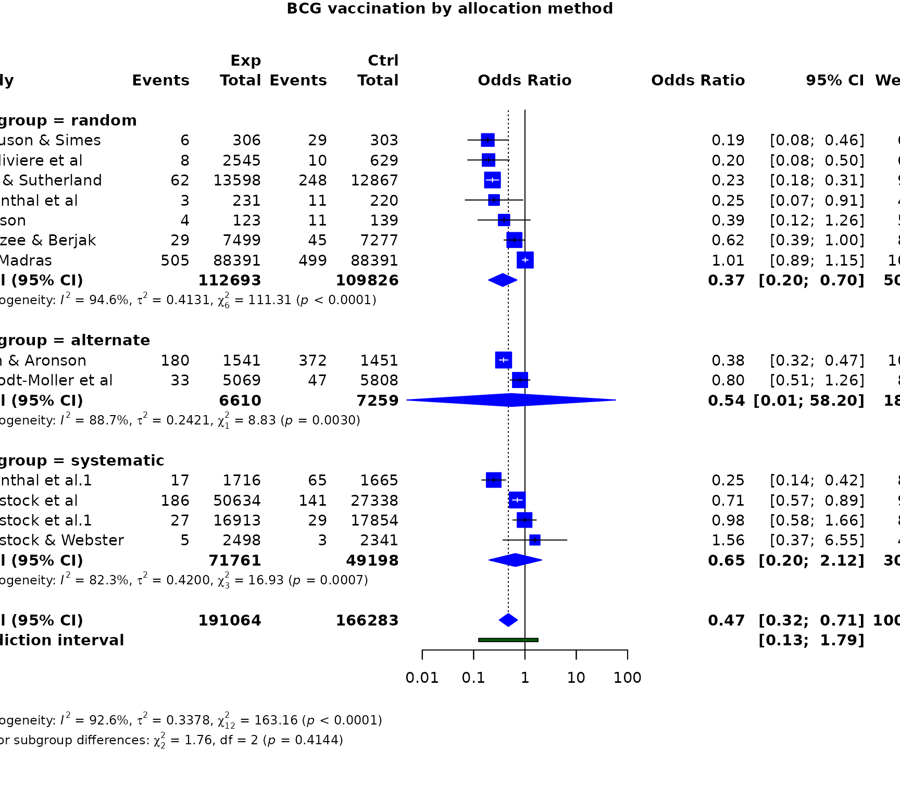
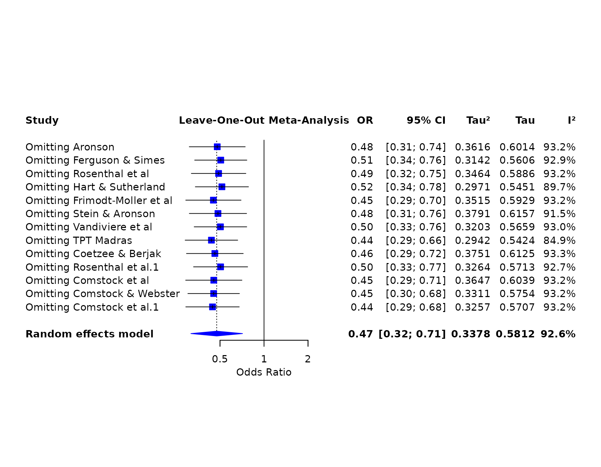
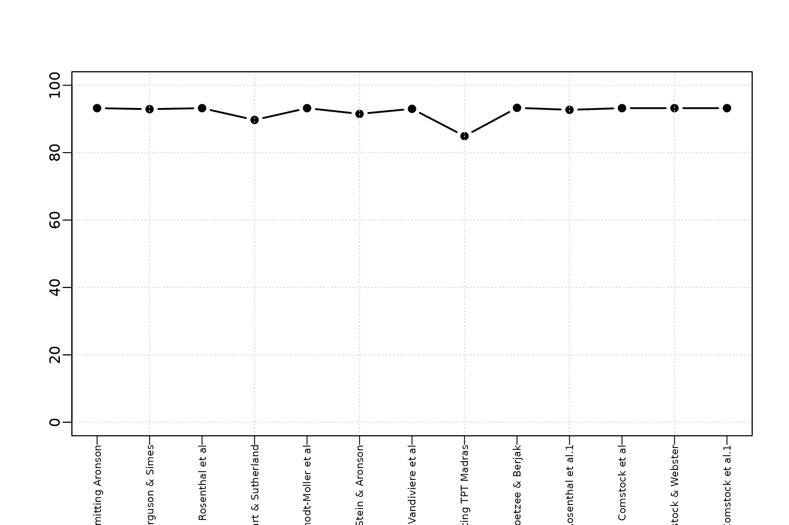
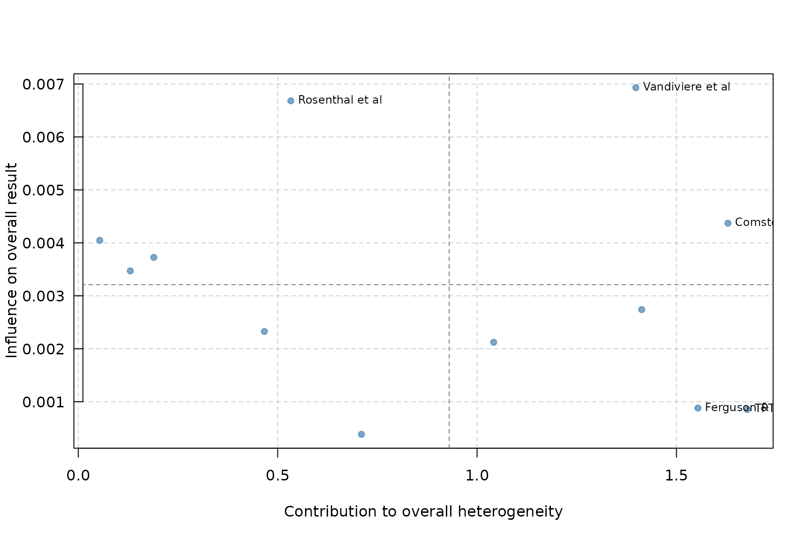

This case study asks whether BCG vaccination reduces tuberculosis and whether the effect differs by allocation method. It demonstrates the complete two-group binary-outcome workflow.
library(metapropul)
data("dat_bcg", package = "metapropul")
dat_bcg$ncon <- dat_bcg$cpos + dat_bcg$cnegRandom-effects odds ratios and subgroups
bcg_or <- meta_ratio(
dat_bcg,
event.e = "tpos", n.e = "npos",
event.c = "cpos", n.c = "ncon",
studylab = "author", subgroup = "alloc",
measure = "OR", model = "random",
tau_method = "REML", ci_method = "HK"
)
summary(bcg_or)
#>
#> Meta-analysis Summary
#> ----------------------
#> Number of studies: 13
#> Total observations: 357,347 (191,064 experimental, 166,283 control)
#> Total events: 2,575
#>
#> Pooled OR = 0.47 (95% CI: 0.32, 0.71)
#> Prediction interval: 0.13 – 1.79
#> p-value = 0.002
#> Q = 163.16 (df = 12), p < 0.001
#> I² = 92.6%
#> Tau² = 0.3378
#>
#> Subgroup results
#> ----------------
#> random: 0.37 (95% CI: 0.20, 0.70), Tau² = 0.4131, I² = 94.6%
#> alternate: 0.54 (95% CI: 0.01, 58.20), Tau² = 0.2421, I² = 88.7%
#> systematic: 0.65 (95% CI: 0.20, 2.12), Tau² = 0.4200, I² = 82.3%
#>
#> Test for subgroup differences (random): Q = 1.76, df = 2, p = 0.414
#>
#> Notes
#> -----
#> - Pooled OR < 1 indicates lower odds in the experimental group.
#> - I² quantifies the proportion of total observed variability attributable
#> to between-study heterogeneity rather than sampling error.
#> - However, I² increases with study precision and may approach 100% even
#> when Tau² remains unchanged.
#> - Therefore, I² should not be used alone to judge heterogeneity or decide
#> whether studies should be pooled.
#> - Tau² represents the variance of true effects across studies and is
#> generally more informative than I² for judging the magnitude of
#> heterogeneity.
#> - High I² observed. Interpret cautiously because I² may be inflated in
#> large or highly precise studies.
#> - The prediction interval shows the range of effects expected in a new
#> study and helps assess clinical relevance.
#> - Confidence interval method for random-effects model: HK.
#> - The subgroup-difference test assesses whether pooled effects differ
#> between subgroup levels; a non-significant result does not prove the
#> subgroups are equivalent.
#> - Subgroup-specific prediction intervals are not shown in this summary.
#> - Decisions to pool studies should be based on clinical relevance, not
#> solely on statistical heterogeneity.
#>
#> For study-level results: object$tableThe subgroup rows are reported separately; the subgroup-difference test should not be interpreted as proof that subgroups are equivalent when non-significant.
bcg_or$meta.subgroup.summary
#> # A tibble: 3 × 6
#> Subgroup Estimate lower upper Tau2 I2
#> <chr> <dbl> <dbl> <dbl> <dbl> <dbl>
#> 1 random 0.370 0.196 0.698 0.413 94.6
#> 2 alternate 0.540 0.00500 58.2 0.242 88.7
#> 3 systematic 0.651 0.199 2.12 0.420 82.3For comparison, a fixed-effect risk-ratio analysis uses the same raw data.
bcg_rr_fixed <- meta_ratio(
dat_bcg, "tpos", "npos", "cpos", "ncon",
studylab = "author", subgroup = "alloc",
measure = "RR", model = "fixed"
)
summary(bcg_rr_fixed)
#>
#> Meta-analysis Summary
#> ----------------------
#> Number of studies: 13
#> Total observations: 357,347 (191,064 experimental, 166,283 control)
#> Total events: 2,575
#>
#> Pooled RR = 0.64 (95% CI: 0.59, 0.69)
#> p-value < 0.001
#> Q = 152.23 (df = 12), p < 0.001
#> I² = 92.1%
#> Tau² = 0.3132
#>
#> Subgroup results
#> ----------------
#> random: 0.70 (95% CI: 0.64, 0.78), Tau² = 0.3925, I² = 94.6%
#> alternate: 0.49 (95% CI: 0.42, 0.57), Tau² = 0.1326, I² = 82.0%
#> systematic: 0.64 (95% CI: 0.53, 0.77), Tau² = 0.4003, I² = 81.9%
#>
#> Test for subgroup differences (common): Q = 14.78, df = 2, p < 0.001
#>
#> Notes
#> -----
#> - Pooled RR < 1 indicates lower risk in the experimental group.
#> - I² quantifies the proportion of total observed variability attributable
#> to between-study heterogeneity rather than sampling error.
#> - However, I² increases with study precision and may approach 100% even
#> when Tau² remains unchanged.
#> - Therefore, I² should not be used alone to judge heterogeneity or decide
#> whether studies should be pooled.
#> - Tau² represents the variance of true effects across studies and is
#> generally more informative than I² for judging the magnitude of
#> heterogeneity.
#> - High I² observed. Interpret cautiously because I² may be inflated in
#> large or highly precise studies.
#> - Common-effect model used; Tau² is reported descriptively but not used for
#> weighting.
#> - The subgroup-difference test assesses whether pooled effects differ
#> between subgroup levels; a non-significant result does not prove the
#> subgroups are equivalent.
#> - Subgroup-specific prediction intervals are not shown in this summary.
#> - Decisions to pool studies should be based on clinical relevance, not
#> solely on statistical heterogeneity.
#>
#> For study-level results: object$tableMain results and forest plot
render_gt(table_meta(bcg_or, title = "BCG vaccination and tuberculosis"))| BCG vaccination and tuberculosis | |||
| Study | Events | Weight (%) | Odds Ratio [95% CI] |
|---|---|---|---|
| 1 I² = proportion of total observed variability attributable to between-study heterogeneity. Not a significance test; magnitude depends on study precision and number of studies. | |||
forest_meta(bcg_or, title = "BCG vaccination by allocation method")
Leave-one-out influence analysis
render_gt(table_influence(bcg_or))| Study | Odds Ratio [95% CI] | I² (% variability)1 | Tau² |
|---|---|---|---|
| 1 I² = proportion of total observed variability attributable to between-study heterogeneity. Not a significance test; magnitude depends on study precision and number of studies. | |||
forest_influence(bcg_or)
Cumulative evidence
The cumulative analysis uses study order in the fitted object. In an applied review, arrange the source data by publication year before fitting when a chronological cumulative analysis is intended.
render_gt(table_cumulative_meta(bcg_or))| Step | Study | Odds Ratio [95% CI] | I² (% variability)1 | Tau² |
|---|---|---|---|---|
| 1 I² = proportion of total observed variability attributable to between-study heterogeneity. Not a significance test; magnitude depends on study precision and number of studies. | ||||
forest_cumulative(bcg_or)Heterogeneity and contribution
plot_heterogeneity(bcg_or)
plot_baujat(bcg_or)
Publication-bias assessment
Formal asymmetry statistics can be unavailable for some fitted models. The function reports that limitation and still returns the supported diagnostics.
publication_bias(bcg_or, plot_method = "original")The numerical results, influence patterns, heterogeneity, and possible small-study effects should be interpreted together rather than using any single diagnostic as a decision rule.